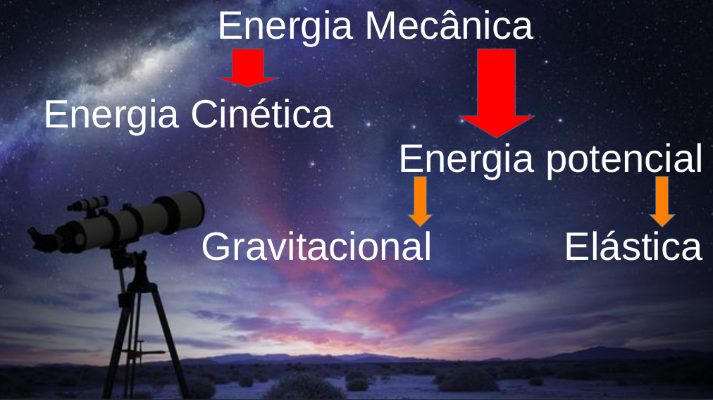

Energia
Astronomia
Prof: Marcelo
Energia é a capacidade
de um corpo realizar
trabalho
Energia pode se
manifestar através de
calor, eletricidade,
magnetismo, altura,
velocidade, pressão e
etc...
O Princípio da
Conservação da
Energia diz que "a
energia pode ser
transformada ou
transferida, mas nunca
criada ou destruída".
Energia Mecânica é
aquela capaz de
colocar os corpo em
movimento.

Carro em velocidade
tem Energia cinética
Ec = m.v²
2
medida em Joule(J)
Energia potencial
gravitacional
Epg = m.g.h
medida em Joule(J)
Energia Potencial
Elástica
Capacidade de um
material de retornar em
estado inicial
Epe = K.x²
2
Astronomia é uma
ciência natural que
estuda corpos celestes
Sistema Solar:
Mercúrio, Vênus, Terra,
Marte, Júpiter, Saturno,
Urano e Netuno
Estrela é um astro de
plasma que possui luz
própria.
Satélite natural é um
corpo celeste que orbita
em torno de um planeta
A Lua é o único satélite
natural da Terra e o
quinto maior do
Sistema Solar
Observação
Lua e alguns planetas